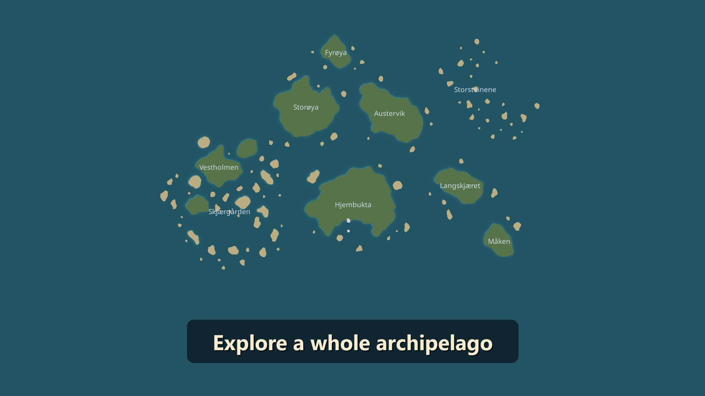
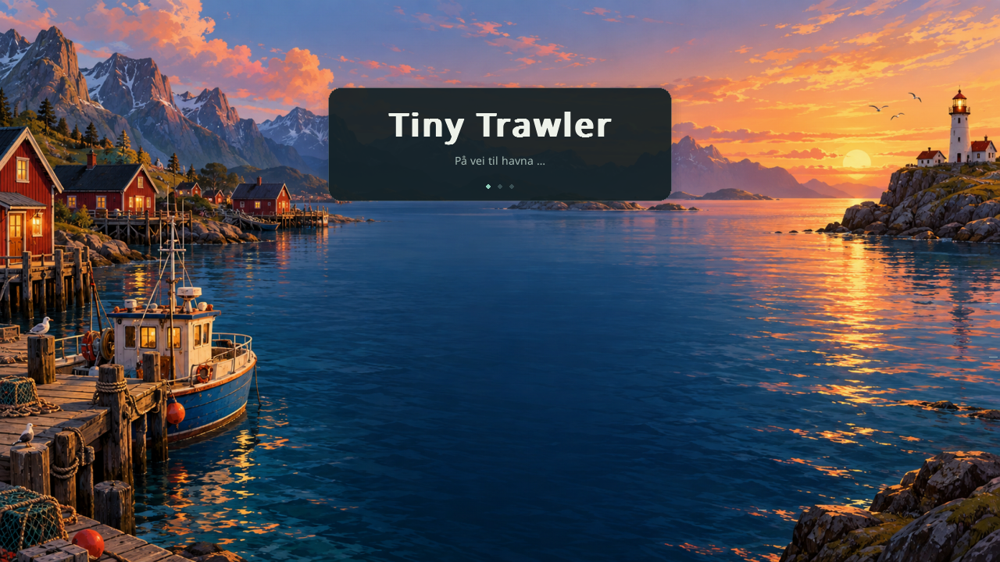
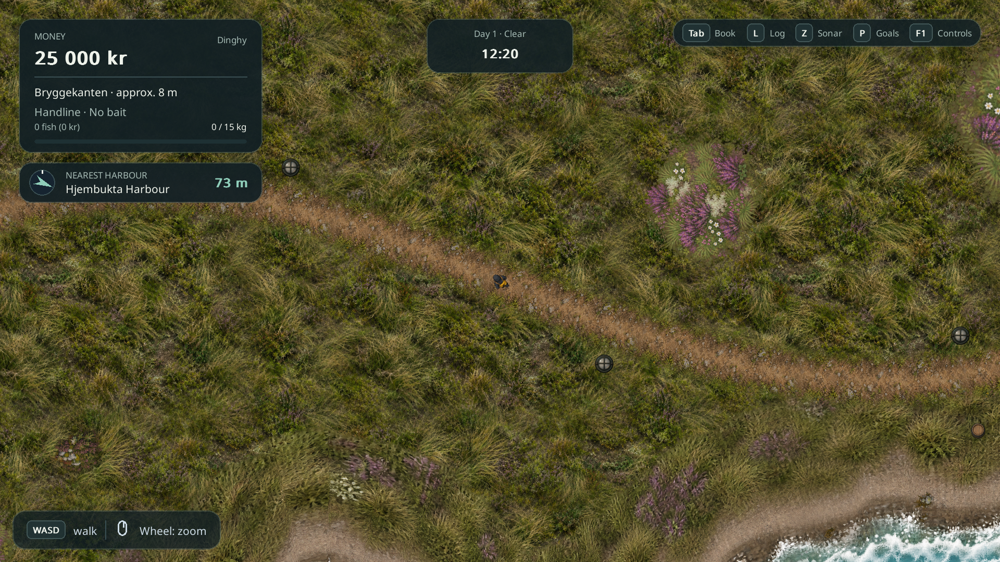
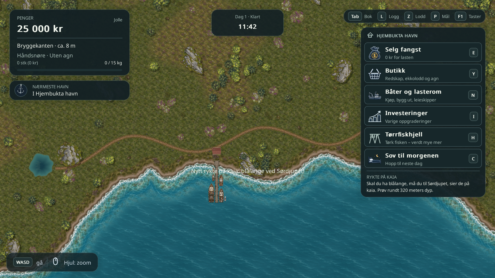
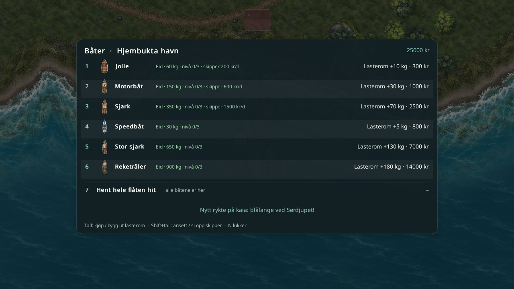
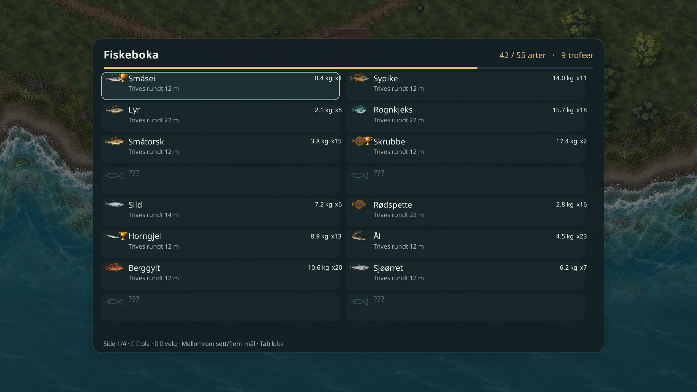
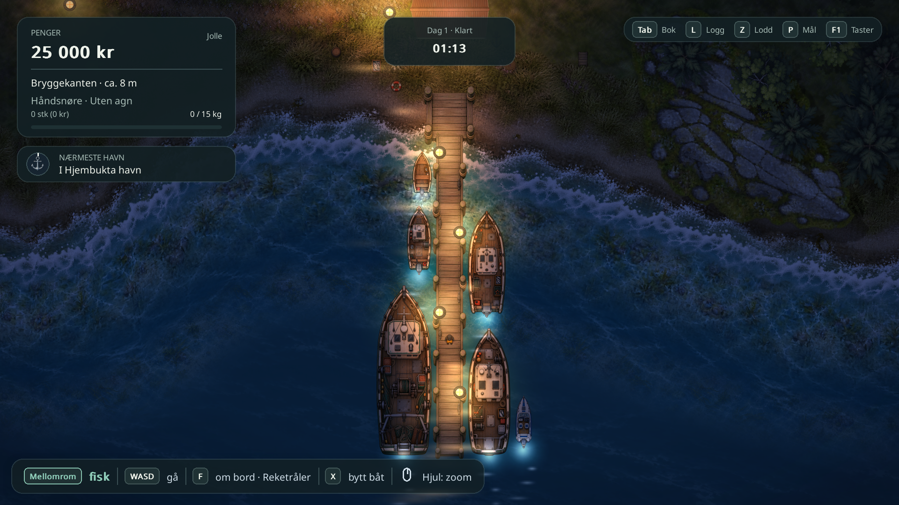
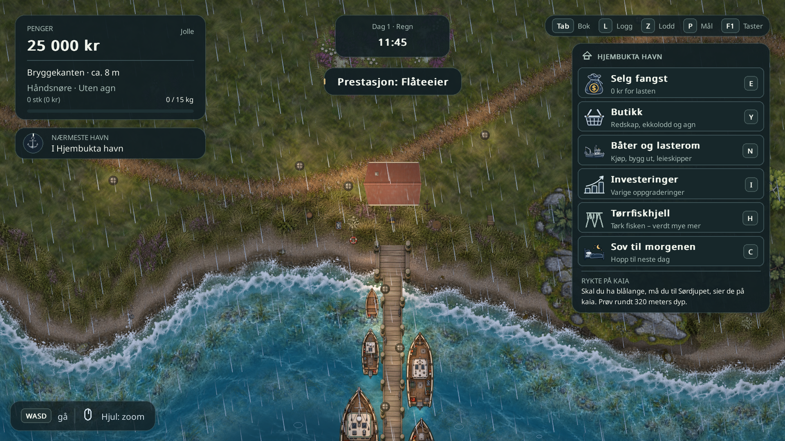
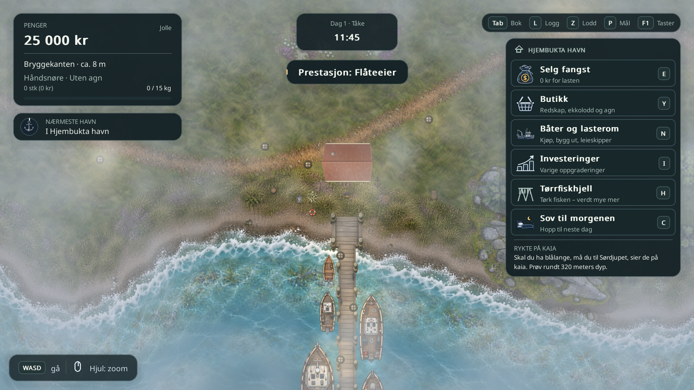

Nytt hav, landskap og UI
Oppdatert 8. oktober med illustrert lasteskjerm. Roligere hav og bakke, tydeligere natur og forbedrede menyer. Traileren viser nå hele kartet i avslutningszoomen. 51 sekunder · 720p · lyd.
Den lokale testdemoen
Fiskingen fortsetter uten avbrudd etter første salg. «Om demoen» åpnes frivillig fra pausemenyen; ønskelistelenken finnes også i hovedmenyen. Demoen har egne lagringer. Den er under lokal testing og er ennå ikke publisert på Steam.

Hele kartet i traileren
Avslutningszoomen er sentrert på hele øyriket, med plass til teksten og to sekunder med rolig oversikt.

På vei til havna
Den illustrerte lasteskjermen blir stående til landskapet er skarpt. Spilltiden står stille mens havna klargjøres.

Den nye butikken

Fiske fra brygga

Landskapet nå
Mykere gress og færre lyngflekker gir stien og figuren mer plass.

Se landskapet før denne oppdateringen

Kysten og tjernene
Tjernene har fått dybdeoverganger, siv og svake refleksjoner.

Båtmenyen

Fiskeboka

Havna om natten

Regn og tåke

Tåken legger seg over landskapet. Prestasjonsvarslet har nå plass under klokken.
